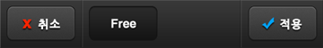
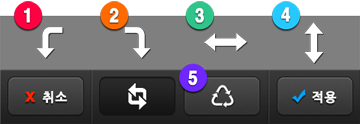
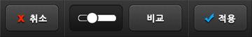
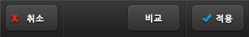

4.  도구(Tool) 메뉴
도구(Tool) 메뉴
(1) 잘라내기(Crop) : 사진에 원하지 않는 물체가 찍혔거나 사진의 비율을 바꾸고 싶을 때, 사진을 잘라냅니다.
잘라내기(Crop) : 사진에 원하지 않는 물체가 찍혔거나 사진의 비율을 바꾸고 싶을 때, 사진을 잘라냅니다.


화면 위의 ①잘라내기 선(Crop Line)을 움직여 사각형을 원하는 크기와 비율로 만든 후 Apply 버튼을 눌러 잘라냅니다.
②비율을 미리 정하여 고정된 비율로 사진을 자를 수 있습니다.
(2) 회전하기(Rotate) : 사진의 방향을 바꾸거나 반전시킬 수 있습니다.
회전하기(Rotate) : 사진의 방향을 바꾸거나 반전시킬 수 있습니다.

①시계 반대 방향으로 회전, ②시계 방향으로 회전, ③좌우 반전, ④상하 반전을 선택할 수 있습니다.
⑤Reset 버튼을 누르면 사진이 원래 방향으로 돌아옵니다.
5.  색상 조절(Color Adjustment) 메뉴
색상 조절(Color Adjustment) 메뉴
(1) 노출(Exposure) : ①밝기(Brightness)와 ②대비(Contrast)를 조절합니다. (오른쪽으로 움직이면 증가, 왼쪽으로 움직이면 감소)
노출(Exposure) : ①밝기(Brightness)와 ②대비(Contrast)를 조절합니다. (오른쪽으로 움직이면 증가, 왼쪽으로 움직이면 감소)

(2) 색상(Color) : ③색상(Hue)과 ④채도(Saturation)를 조절합니다.
색상(Color) : ③색상(Hue)과 ④채도(Saturation)를 조절합니다.

(3) 색온도(White Balance) : ⑤색온도(Color Temperature)와 ⑥색조(Tint)를 조절합니다.
색온도(White Balance) : ⑤색온도(Color Temperature)와 ⑥색조(Tint)를 조절합니다.

(4) 커브(Curves)– 고급 기능 : 커브(Curves)를 활용하면 섬세한 사진 보정이 가능합니다.
커브(Curves)– 고급 기능 : 커브(Curves)를 활용하면 섬세한 사진 보정이 가능합니다.


①커브 라인(Line) 위를 탭(Tap)하여 ②조절 포인트(Control Point)를 추가할 수 있습니다.
조절 포인트를 드래그(Drag)하면 커브의 모양을 조절할 수 있습니다.
조절 포인트를 다른 포인트의 위치 너머(가로 축 기준)로 움직이면 포인트를 없앨 수 있습니다.
커브(Curves)의 우측 상단은 사진의 밝은 부분을, 좌측 하단은 사진의 어두운 부분을 나타냅니다.
예를 들어 위 사진과 같이 S자 모양으로 커브를 만들면 밝은 부분은 더욱 밝게, 어두운 부분은 더욱 어둡게 변하여 대비(Contrast)가 강한 사진이 됩니다.
③적색(Red), 녹색(Green), 청색(Blue) 탭을 선택하면 해당 색상의 Curve를 별도로 조절하여 다양한 컬러 톤(Color tone)을 자유자재로 만들 수 있습니다.

④흑백(B/W) 버튼을 누르면 흑백 상태에서 Curve를 적용하게 되어 다양한 모노톤(Mono-tone)의 느낌을 만들 수 있습니다.

⑤리셋 버튼을 눌러 언제든지 커브 모양을 초기화 할 수 있으며, ⑥도움말 버튼을 눌러 즉석에서 사용법을 다시 확인할 수 있습니다.
(5) 히스토그램(Histogram)– 고급 기능 : 히스토그램(Histogram)을 활용하면 사진의 노출을 세밀하게 조절할 수 있습니다.
히스토그램(Histogram)– 고급 기능 : 히스토그램(Histogram)을 활용하면 사진의 노출을 세밀하게 조절할 수 있습니다.


①히스토그램 그래프(Histogram Graph)는 사진의 노출 분포를 나타냅니다. 그래프의 좌측이 어두운 부분의 비율,그래프의 우측이 밝은 부분의 비율을 나타냅니다. 그래프가 전체적으로 균일할 수록 노출이 적절한 사진이라고 할 수 있습니다.

②자동 조절(Auto) 버튼을 누르면 그래프에 기반한 적정 노출을 자동으로 조절합니다.
③좌측 버튼(Black)을 움직이면 어두운 부분을, ④우측 버튼(White)을 움직이면 밝은 부분의 노출을 조절할 수 있으며
⑤가운데 버튼(Mid-tone)은 두 버튼 사이의 비율을 나타내기 때문에 두 버튼의 움직임에 따라 자동으로 위치가 변하게 됩니다. 가운데 버튼을 직접 움직여 중간 톤의 비율을 조절할 수 있습니다.
6.  추가 기능(Add-ons) 메뉴
추가 기능(Add-ons) 메뉴
(1) 텍스처(Texture) : 사진에 다양한 질감을 적용하여 특별한 멋을 더할 수 있습니다.
텍스처(Texture) : 사진에 다양한 질감을 적용하여 특별한 멋을 더할 수 있습니다.


하단의 ①텍스처 목록에서 원하는 질감을 선택한 후 텍스처의 ②강약(Opacity)을 조절하세요.
(2) 비네팅(Vignetting) : 비네팅 효과(Vignetting effect)로 사진 주변에 어두운 분위기 또는 밝은 분위기를 더할 수 있습니다.
비네팅(Vignetting) : 비네팅 효과(Vignetting effect)로 사진 주변에 어두운 분위기 또는 밝은 분위기를 더할 수 있습니다.

(3) 액자(Border) : 다양한 액자 중 원하는 액자를 선택할 수 있습니다.
액자(Border) : 다양한 액자 중 원하는 액자를 선택할 수 있습니다.


액자를 적용한 뒤에 다른 효과를 추가하면 액자도 함께 변하기 때문에 다른 모든 작업이 끝난 뒤에 액자를 선택하시는 것이 좋습니다.